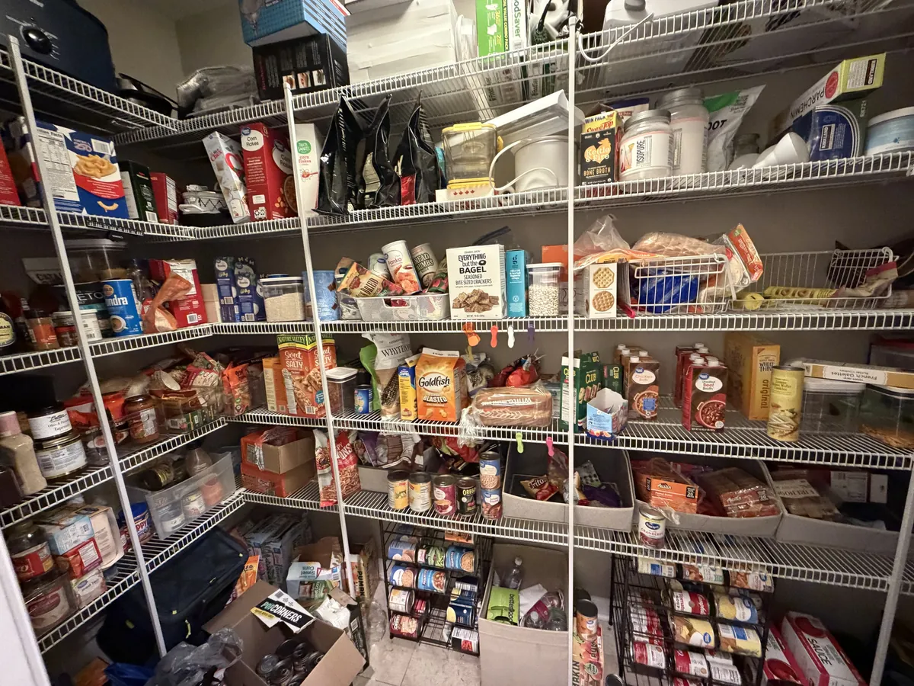
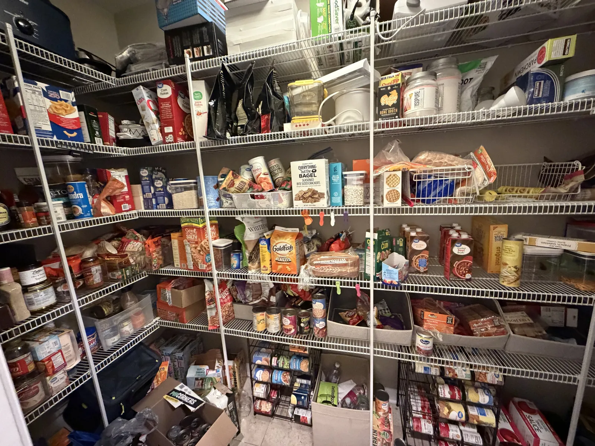
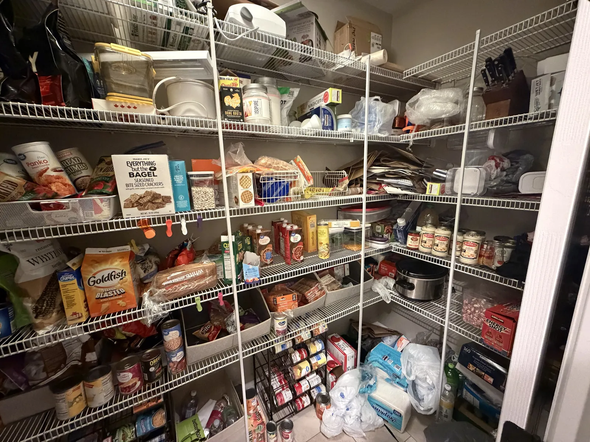
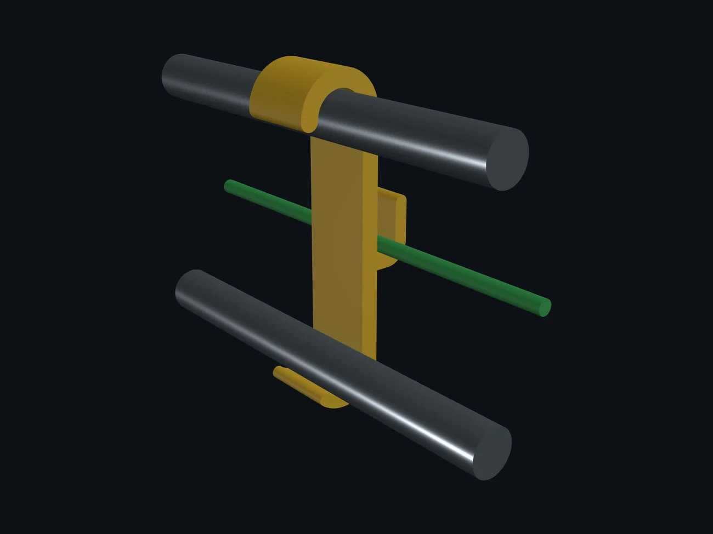
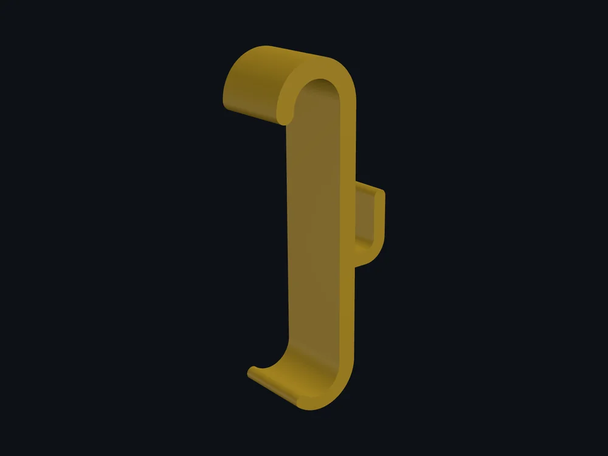

A pantry that shows kids where things go.
A kid says Hey Jarvis, goldfish crackers.
LEDs on the wire shelves light the right spot, and red ripples run along the shelves toward it. A tablet, 184 LEDs, about $70 of parts, and less than a dollar of AI each month. I built it for my kids in two weeks.

Heard
“goldfish crackers”
Zone
Goldfish and graham crumbs
Back wall · shelf 2
The item goes on the lit shelf.
Everything has a place. Nobody knows where it is.
Our pantry is a U of wire shelves: three walls, five shelves on each wall, and about thirty places where things live. Cereal goes on the back wall, shelf 4, at the left end. Goldfish go two shelves lower. The tomato soup goes in a can rack on the floor.
When the kids help put the groceries away, things land wherever there is a gap. Labels do not help a kid with an armful of boxes. A kid must be able to ask the pantry, and the pantry must point.
So the goals were simple:
- Ask with your voice, with no tap and no reading.
- See the answer on the shelf itself, not on a screen.
- Always give an answer. Learn from each mistake.
- Cost almost nothing to run.

Five steps from a word to a lit shelf.
A wall tablet runs the whole loop in the browser. Each step uses the cheapest thing that works, and the expensive steps happen once per item, not once per question.
-
01 · Wake
“Hey Jarvis”
The tablet hears the wake word itself, with three small neural networks in the browser. No audio leaves the tablet before the wake word.
$0 · on the tablet
-
02 · Hear
The words
After a beep, the tablet records the phrase. An audio model on OpenRouter writes the words down. This call is short: it does not get the zone list.
< $0.001 · Gemini Flash Lite
-
03 · Choose
The zone
Learned words give their zone at once. New words go to a model with the list of 30 zones. The list has no “unknown” option. With no internet, a word match chooses.
$0 if learned · a model if new
-
04 · Light
The shelf
The tablet calculates the color of all 184 LEDs and streams full frames to the WLED controller, about 20 each second. The 3D view on the tablet shows the same frames.
10 s · then the lights fold away
-
05 · Learn
The memory
The tablet remembers each answer with the words that the kid said. If the spot is wrong, the kid taps Wrong spot? and chooses. That choice wins from then on.
Next time · no AI call
Design rule
It never says “I do not know.”
A shrug teaches nothing, and the kid walks away. A near guess still gets the item to the right wall, and a tap on Wrong spot? fixes that item forever. So the model must always choose a zone, and the fallback must always choose one too. “goldfish”, “Goldfish” and “goldfish cracker” all become the same learned item.
The other way in · the camera
- A kid taps Camera. The tablet looks for a barcode with zxing-wasm.
- A known barcode shows its place at once. It costs nothing.
- A new barcode gets its product name from Open Food Facts, which is free.
- A vision model gets the photo and the name, and chooses one zone. Claude Haiku costs about $0.0003 per scan.
- The tablet remembers the barcode. The next scan needs no AI.
A second opinion · Jev
A parent can switch the zone chooser to Jev, a “System One” model from TypeSafe. Jev does not write text. It gets the state and a typed question, and gives back a calibrated probability for each zone. With barcode data, Jev alone chooses for about $0.00003. Jev cannot see photos, so with a photo only, the scan model names the item first and Jev chooses the zone.
On both paths, a model that is not sure makes the tablet ask the kid to say the name of the item.
The tablet listens all day. It sends nothing until it hears its name.
A microphone that is always on must be private and free. So the wake word runs on the tablet, in the browser, with the openWakeWord models. The tablet is on its charger, so power is not a problem.
All three models run each 80 ms. On a PC, one step takes about 4 ms.
What the tests showed
The model is trained on “hey jarvis”, but “Jarvis” alone also wakes it. With a short stop after the name (“Jarvis, goldfish”), text-to-speech tests score 0.78 to 0.999. Without the stop, 0.12 to 0.88. Other speech stays below 0.21.
Party or snack?
“Hey Jarvis, disco” or “Hey Jarvis, let’s party” starts the dance party. A party word with other words is an item: “party mix” is a snack, and it goes to the chips.
It keeps working
A watchdog opens the microphone again if the audio stops. If the browser blocks audio until a touch (after a reload), the home screen says “Touch the screen to turn on Hey Jarvis”. On a PC, the wake word is off by default.
One lit spot is easy to miss. So every other LED points at it.
A kid in the doorway sees three walls at once. A small green spot on the far side of the back wall is easy to miss. So the tablet uses all the other LEDs as arrows: they turn red, and ripples move in to the zone from every side, around corners and up and down the jumps between shelves.
The tablet knows the 3D position of each LED, from the shelf lengths and the route of the string. For each LED it calculates the distance in meters to the nearest LED of the zone. The color of each LED then comes from that distance and the time:
glow = 0.22 + 0.78 · e−d / 0.5 m
wave = ½ + ½ · cos 2π (d / 0.8 m + t / 1.2 s)
level = 0.6 · glow · (0.25 + 0.75 · wave²)- The glow makes LEDs near the zone brighter, so the eye finds the area first.
- The wave moves inward at about 0.67 m/s. The square makes each ripple a narrow, bright band, so the eye sees the motion.
- At the start, the light spreads out from the zone at 5 m/s. After 10 seconds, the red folds into the zone, and then the zone fades.
- The zone pulses green when a ripple arrives. A floor zone breathes pink on shelf 1 (“look below the light”). A shelf 5 zone breathes orange on shelf 4 (“look above the light”).
Frames, not effects
WLED has many built-in effects, but none of them know where a shelf is. So the tablet sends a full frame of 184 colors (the JSON “i” list) as fast as WLED takes it, about 12 to 20 times each second.
Its own clock
If WLED is slow, the show clock waits. Between two frames, the clock moves a small step at most. A slow frame rate makes the ripples slower, but a ripple never jumps or seems to move back.
Gamma on the tablet
The math works in perceptual values, like a screen. The tablet applies gamma 2.2 itself, with the WLED gamma off. A ripple is about 60 of 255 next to the zone, 19 at 0.5 m, and 3 at 2 m.
200 LEDs, one camera, and each LED blinks its own number.
The light math needs the position of every LED. The default map comes from the measured shelf lengths and the route of the string, so it needs no setup. If a string sags or skips, a camera finds the true positions.
The tablet plays 14 steps, one second each, and the camera takes one photo for each step:
- Lead: all off, time to start the camera.
- Start: all on. The “on” level of each LED.
- Dark: all off. The “off” level of each LED.
- Bit 0 to bit 7: LED i is on if that bit of i + 1 is 1. Eight bits count to 255, so 200 LEDs fit.
- Parity: on for an odd number of 1 bits. It finds most read errors.
- End and tail: all on, then all off.
The decoder finds each point that changes between the photos, reads its bits, and checks the parity. Then it splits the points into rows where the string turns. A parent clicks one dot of each row to give it a shelf.
LED i blinks i + 1, so no LED is dark in every bit step. The LEDs blink green: one color channel, so the current limiter does not dim them.
One string, one snake, two power feeds.
The first plan was a dense LED strip at 30 LEDs per meter. But a kid only needs the general area, so a pebble string with one LED every 10 cm is enough. It is cheaper, it is easy to zip-tie to a wire shelf, and it bends around the corners.
| GLEDOPTO ESP32 WLED controller, with microphone | $23.99 |
| WS2812B pebble string, 2 × 10 m, 5 V, 200 LEDs | $25.99 |
| 5 V 4 A power supply and barrel jack | $10 |
| 18 AWG wire, about 4 m (or an old lamp cord) | $0 – 8 |
| Wire nuts or tape, and 200 zip ties | $6 – 14 |
| A tablet that we already had | $0 |
| Total | $66 – 82 |
- Two power feeds. One at the controller and one at the junction of the two strings, near LED 100. Each LED is then at most about 10 m from a feed. One lit zone takes less than 1 A.
- Red shows as green. The pebble strings use the RGB color order; WLED expects GRB. The blue test light looks correct with both settings, so the test that matters uses red.
- Metal shelves. Tape goes over each unused plug, and no bare copper may touch a shelf.

The mount · a printed clip
A clip that snaps onto two wire bars.
The front of each wire shelf is two round bars, one above the other. Zip ties hold the string. For a neater mount, I designed a clip to print:
- The top hook sits on the top bar and carries the load.
- The catch snaps under the bottom bar, so the clip cannot lift off or swing out. Its tip gets thinner, down to 1.6 mm, so it flexes about 0.5 mm as the bar goes in.
- The light hook is a small U on the front. The LED string drops into it.
The design is code. The profile is a chain of arcs. three.js extrudes it 10 mm and exports the STL. Each dimension is a slider: the bar size, the gap, the clearance, the wall, the wrap of each hook, and the light hook. The design page warns when the snap is more than 1 mm, because the catch can then break.
The part prints flat on its side, with no supports. PETG gives the best spring.
More than 1 mm of snap: the catch can break.


And then there is the disco button.
A pantry full of LEDs, a tablet with a speaker, and kids. The 🪩 Disco button, “Hey Jarvis, disco” or “Hey Jarvis, party” starts a 30-second dance party.
- The music comes from the Web Audio API on the tablet, at 124 BPM. No music file.
- The light effect changes each 2 bars, on the first beat of the bar.
- One effect reacts to sound through the microphone in the controller.
- No strobe effects. It is a party for kids.
This model draws its own copies of four WLED effects, with no sound.
The small things that keep it on the wall.
It updates itself
Each 5 minutes the tablet reads version.json. A new version loads only when nobody uses the tablet: the home screen shows, no lights are on, and nobody touched it or said the wake word for 1 minute.
No secrets in the app
The app is a static page on GitHub Pages. Each tablet keeps its own OpenRouter key in its browser storage. A QR setup code copies the keys from a computer to the tablet.
Zones from a photo
A parent takes one photo of a wall. Claude Sonnet makes the zones of that wall, for about $0.01 to $0.05. A zone editor then splits, merges and resizes them with the mouse, and lights each zone as you point at it.
A home screen
When nobody asks the pantry anything, the tablet is a family wall display: the clock, the weather, and a 7-day calendar. A small Google Apps Script sends only the title, the time and the color of each event.
A parent menu
A PIN keeps the kids out of the settings. A parent can check the learned items, change the light colors and the light time, test each zone, and back up the setup to another device.
Tests
Vitest covers the zone math, the LED map, the light shows, the LED finder decoder, the learned items, the update rule and the wake word. The wake word test plays text-to-speech recordings through the real models.
Two weeks, start to “Hey Jarvis”.
- Nov 13
Two photos of the pantry, and a first list of 30 zones from them.
- Nov 14
The scan app: barcode, photo, an AI zone choice, Jev, and the first WLED lights. The pebble-string plan.
- Nov 15
The LED finder, the mouse zone editor, and the colors for the floor and the top shelf.
- Nov 21
The home screen: clock, weather, calendar, and the pantry panel.
- Nov 26
The setup code, voice input, the disco, the measured LED map, the guide lights, the 3D distance, learned spoken items, updates on the wall, “Hey Jarvis” all day, and the printed clip for the string.
Wake word models: openWakeWord by David Scripka (CC BY-NC-SA 4.0). LED firmware: WLED. Product data: Open Food Facts.
Back to all work